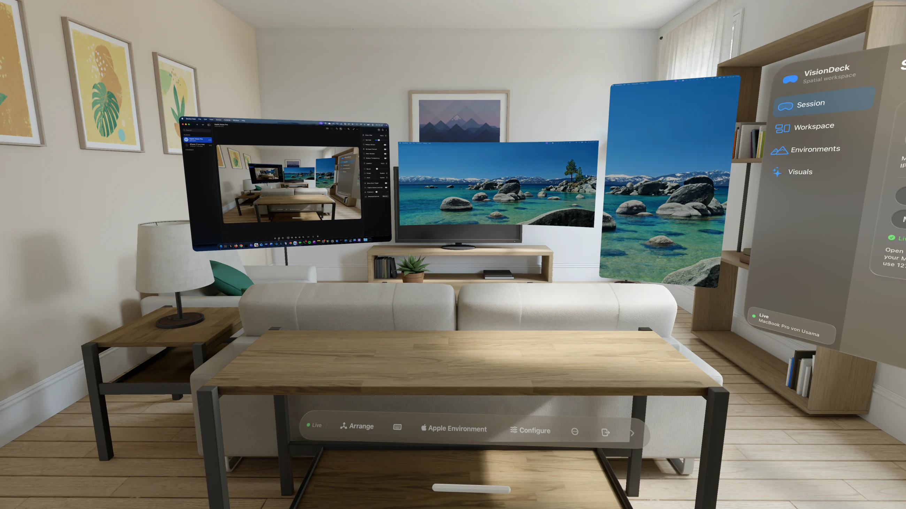
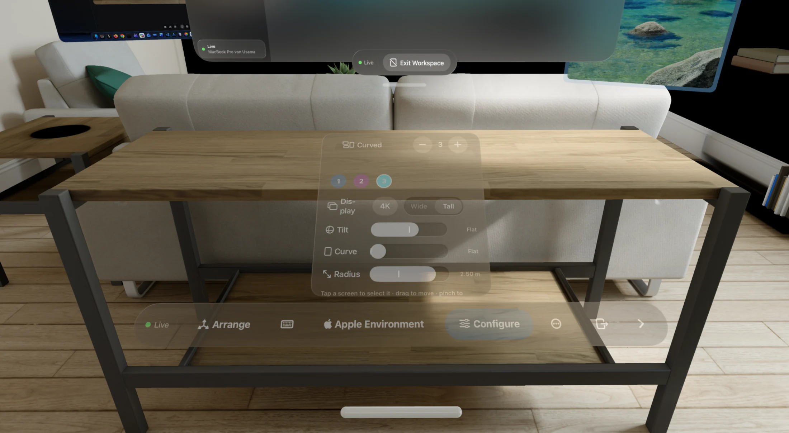
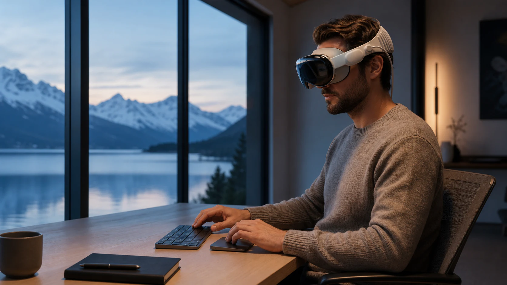
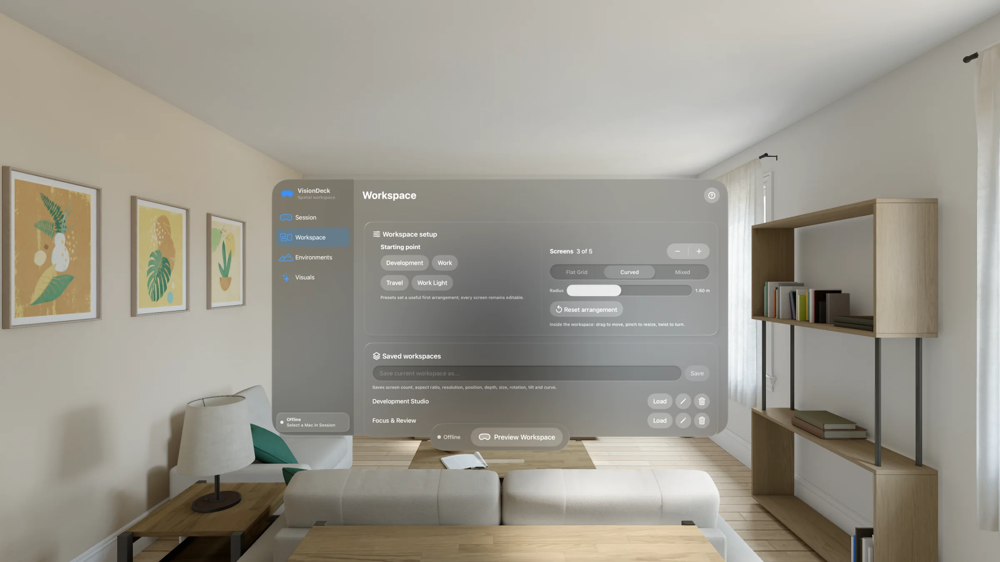
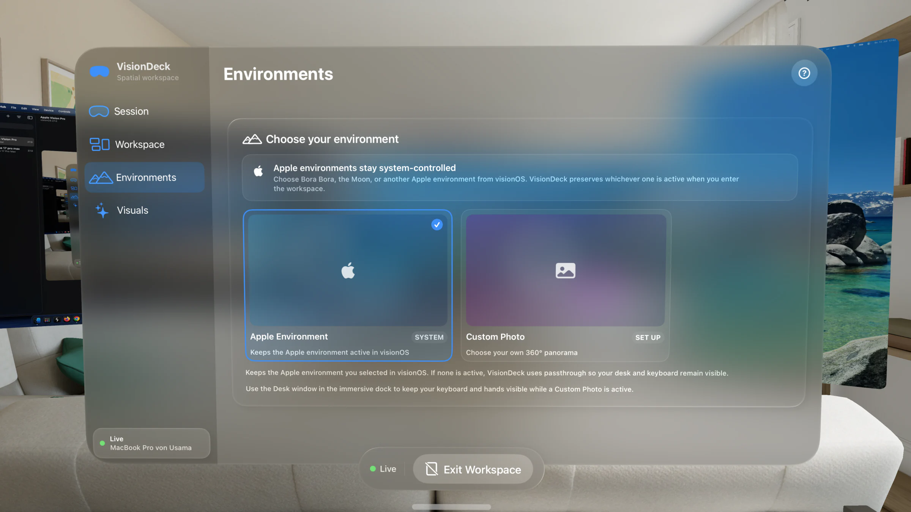
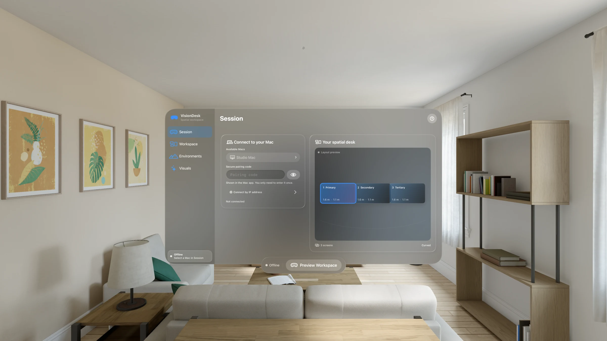

Up to five displays
Real macOS displays with independent resolution and orientation.
Up to five real Mac displays, placed anywhere around you. Fast, private, and built for Apple Vision Pro.
Apple silicon Mac · Apple Vision Pro · Local network

Arrange, curve, tilt, resize and save every display exactly where it belongs.

Real macOS displays with independent resolution and orientation.
Start with a useful layout, then place every screen by hand.
Choose 1080p through 5K and ratios from 4:3 to 32:9.
Move a screen with your hand. Pinch to resize. Twist to turn. Switch between arrange, scroll and pointer without leaving the workspace.


Built to make the technology disappear: a Mac, a keyboard and as much screen space as the moment needs.
AI-created editorial scene. Product screenshots elsewhere on this page are real captures.Profiles sync between Vision Pro and the Mac host, then restore screen size, distance, aspect ratio, resolution, position, rotation, tilt and curve — so returning to work takes one tap.


One complete Mac display is always free. Pro adds the workspace tools built for larger setups.
Everything needed for a focused spatial desk.
For multi-display work and reusable spatial setups.
For eligible new subscribers. After 14 days, the selected plan renews automatically unless cancelled. Prices shown are U.S. base prices; the App Store confirms local pricing and eligibility before purchase.
VisionDeck connects directly between your Mac and Vision Pro. No account. No cloud workspace. No analytics.
No account to create. No cloud workspace to configure.
Open VisionDeck and grant Screen Recording access.
Choose your Mac on the local network and pair securely once.
Use one display free, or load a complete multi-screen setup with Pro.

Build the Mac workspace you have always wanted — then take it anywhere.